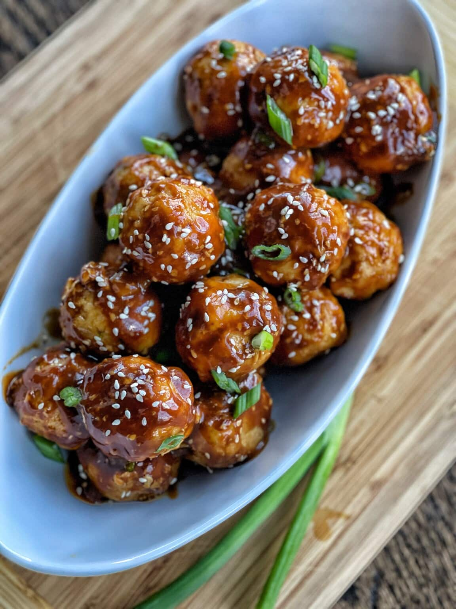

Sticky Turkey Meatballs

Ingredients:
Zaa'tar Agave Glaze:
- 1 pound ground turkey (85/15)
- 2 pieces pita bread
- 1 tablespoon red pepper paste
- 1 onion (sliced)
- 6 cloves garlic (roasted)
- 1 clove garlic (finely sliced)
S
Instructions:
Prepare Pepper Paste
- Combing roasted garlic, roasted red peppers (without liquid), and paprika.
- Grind aforesaid mixture into a paste (food processor, mortar/pestle).
- Add salt to taste.
- In a large skillet or saucepan, cook ground beef with garlic over medium heat until beef is browned. Stir in crushed tomatoes and tomato paste, then simmer for 15 minutes.
Prepare Beef
- Pat the meat dry.
- Slice beef into chucks (approx 3 inches).
- Combine beef and pepper paste, let marinate.
Cook Beef
- Preheat oven 350 degrees F.
- Oil roasting pan (with elevated sides).
- Combine sliced onion and marinated beef into pan.
- Roast until brown, flip.
- Add stock (approx 1 cup)
- Roast at 225 F until beef pulls apart easily, flipping on occasion.